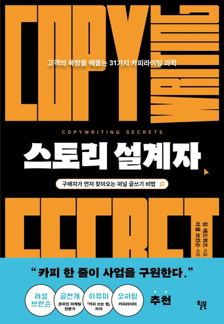
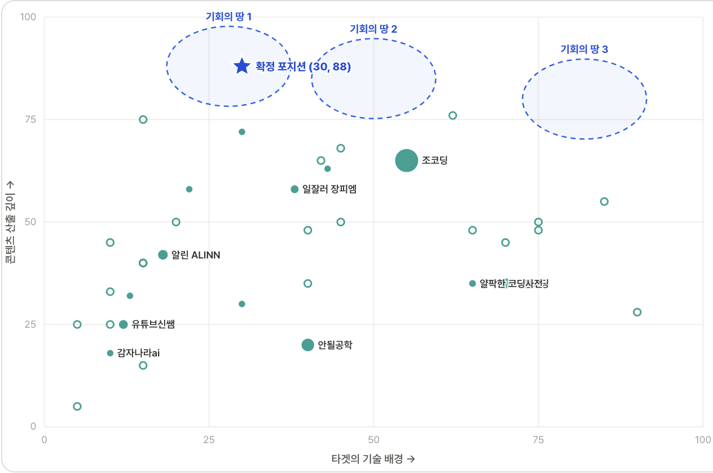

유튜브 챌린지
2주에 1개, 3개월에 6개
환영합니다 — 오늘 이렇게 진행합니다
| ~15분 | 왜, 그리고 어떻게: 챌린지 목적 · 진행 달력 · 2주 워크플로우 · 시즌1이 가르쳐준 것 |
|---|---|
| ~30분 | 채널 기획 발표: 진행자가 먼저, 이어서 전원 1인 5분 (대상 · 목표 · 메시지) |
| ~15분 | 운영 안내 + 과제 + Q&A: 진행 방식 · 이번 주 채널 개설 |
오늘 끝나면 세 가지를 손에 쥡니다.
왜 지금, 유튜브인가
지식으로 일하는 사람에게, 이 챌린지의 목적은 하나입니다 — 고객의 신뢰가 쌓이는 자산을 만드는 것.
- 주의(attention)가 가장 비싼 시대. 가장 희소한 자원은 고객의 주의, 그 주의가 가장 오래 머무는 곳이 영상
- 콜드 트래픽을 데우는 건 짧은 노출이 아니라 긴 신뢰. 글 1편이 스치는 동안, 롱폼은 몇 분의 체류를 만든다
- 무료 콘텐츠가 판매의 앞단이 된다. 영상 6개는 지식 비즈니스 영업 자산의 초석
혼자 시작하면 채널 개설에서 멈춥니다. 그래서 시스템과 동료로 12주를 끌고 갑니다.

12주 전체 일정, 마감은 여섯 번
| 사이클 | 기획 주 | 기획안 마감 | 제작 주 | 영상 마감 |
|---|---|---|---|---|
| 1 | 07/20 (월) ~ 07/26 + OT 07/25 (토) | 07/26 (일) | 07/27 ~ 08/02 | 08/02 (일) |
| 2 | 08/03 ~ 08/09 | 08/09 (일) | 08/10 ~ 08/16 | 08/16 (일) |
| 3 | 08/17 ~ 08/23 | 08/23 (일) | 08/24 ~ 08/30 | 08/30 (일) |
| 4 | 08/31 ~ 09/06 | 09/06 (일) | 09/07 ~ 09/13 | 09/13 (일) |
| 5 | 09/14 ~ 09/20 | 09/20 (일) | 09/21 ~ 09/27 | 09/27 (일) |
| 6 | 09/28 ~ 10/04 | 10/04 (일) | 10/05 ~ 10/11 | 10/11 (일) |
기획 주 기획안 제출 · 제작 주 영상 업로드 인증 · 마감은 모두 일요일 자정 · 마무리 모임 10월 중순 (오프라인)
2주 워크플로우: 기획 → 촬영 → 편집
1. 기획
소재 선정 → 기획안(타깃·주제·구성) 제출
일요일 자정 마감
2. 촬영
확정 기획안대로 촬영
말할 것이 정해져 있으니 찍는 데만 집중
3. 편집·업로드
편집 → 업로드 → 인증
일요일 자정 마감
기획 주(1주) 기획 · 제작 주(1주) 촬영+편집+업로드 — 이 사이클이 6번 반복됩니다.
- 마감은 일요일 자정, 롱폼만 (쇼츠 /shorts/ 는 불인정), 미제출은 그대로 기록 — ✅/❌·🔥연속이 정산 카드에 자동 게시, 서로 다 보입니다
벌칙은 없습니다. 대신 기록이 남습니다. 시즌1에서 이 투명함이 완주를 만들었습니다.
시즌1에서 막힌 것, 시즌2에서 바꾼 것
시즌1은 20명 · 12주 완주 · 142건 인증으로 판을 이미 검증했습니다. 그런데도 이런 게 막혔고, 그래서 이렇게 바꿨습니다.
| 시즌1에서 막힌 것 | 시즌2에서 바꾼 것 |
|---|---|
| "2주 1회 · 플랫폼 자유"는 유연했지만 리듬이 무너지기 쉬웠다 | 구조기획 주 · 제작 주 분리 — 뭘 할 주인지 늘 명확 |
| 제출만 받고 끝, 콘텐츠 질은 각자 몫이라 동기가 흔들렸다 | 동료OT 전원 발표 + 채널 기획서 상호 참조 |
| 7개 플랫폼 링크를 모으는 과정에서 인증이 불안정했다 | 안정성유튜브 롱폼 단일화 |
| 온라인만으로는 시작·끝의 결속력이 아쉬웠다 | 결속OT 전원 발표 + 오프라인 마무리 모임 |
채널 콘셉트, 감이 아니라 지도를 보고
1. 사업 기준
내가 가진 것(경험·자산·강점)을 기억이 아니라 기록으로 정리
2. 시장 지형
경쟁 채널을 2축 지도에 배치 → 기회의 땅(빈 포지션) 찾기
3. 검증·확정
"왜 비었나"를 따져 검증 → 콘셉트 한 문장으로 수렴
- 공백이 곧 기회는 아닙니다. 수요가 없어서 빈 곳과 어려워서 빈 곳을 구분
- 목표는 구독자 수가 아니라 내 사업으로의 전환일 수 있습니다. 지표를 먼저 정하세요
- 여러분 기획서에도 레퍼런스 3개를 회신해드립니다
시장 지형도: 35채널 포지셔닝 맵

제 채널은 이렇게 정했습니다
콘셉트 한 문장
내가 실제로 굴리는 업무 자동화 시스템을 공개하고, 누구나 제약 버전(무료·저비용 도구)으로 재현할 수 있게 번역해주는 채널
- 시그니처 — 잘나서가 아니라, 시행착오를 먼저 겪은 사람이 알려준다
- 주 시청층 — 지출은 제약돼 있지만 성장 욕구로 공부하는 직장인 (반복 업무의 시스템화에서 막힘)
- 메시지 — "자동화는 개발자의 특권이 아니다. 시행착오만 감수하면 누구나 자기 업무 시스템을 만든다"
E2E 시스템 구축 공백 존
공백의 이유 = 수요 부재가 아니라 공급 난이도(실운영+교수설계+제작 체력) → 난이도가 곧 해자
시리즈 기획 방향: 매편 독립 완결 2부 구성
1부. 돌아가는 모습
실제 운영 중인 시스템이 실제로 돌아가는 모습
(업무일지 자동화 · 챌린지 봇 · 콘텐츠 파이프라인)
2부. 따라 만들기
제약 버전으로 번역해 따라 만들기
셀프호스팅 → 노는 스마트폰, 유료 API → 무료 티어
시그니처 프레임: 유행 → 조건 → 판단
- 유행 — 지금 모두가 말하는 현상에서 출발 (Hook)
- 조건 — 실제로 살아남는 조건을 데이터로 제시 (Insight)
- 판단 — 내 상황에선 이렇게 선택한다 (Action)
성공 지표 (조회수·구독자 아님)
- Threads·LinkedIn 팔로우 전환 · 강의/출강 문의 · 책 판매
- 첫 12주 = 검증 기간, 신호 없으면 포맷 조정 (two-way door)
제가 사업 결정을 검증할 때 쓰는 도구
분기마다 전략이 흔들렸는지 점검하는 기본 도구
대안 2~3개와 다음 행동을 뽑는 자기 멘토링 프레임
전부 공개돼 있습니다 (BuildnWrite Solo Biz Playbook). 채널을 하나의 사업으로 굴릴 분들께 참고자료로 권합니다.
자기소개 & 채널 기획 발표


진행자 먼저 발표한 다음, 순서대로 1인 5분. 발표 뒤 진행자 코멘트 1개 + 동료 질문 1개. 발표엔 세 가지만 — ① 대상 청중 ② 채널 목표 ③ 전달 메시지
발표가 끝나면
- 제출된 기획서를 바탕으로 레퍼런스 채널 3개를 찾아 회신: 퍼널 구조 · 타겟 · 포맷, 역할별로 하나씩
- 기획서는 OT 후에도 언제든 다시 제출 가능
- 이 기획서가 12주 내내 모든 기획안의 기준점이 됩니다
아직 제출 전이라면: challenge.buildnwrite.com/plan 에서 채널 기획서를 작성해 주세요
사이클 1: 이번 주에 할 일
| 오늘 (07-25) | 기획서 발표 후 방향 확정 |
|---|---|
| 이번 주 | 유튜브 채널 개설: 사이클 1에 포함된 과제입니다 |
| 07-26 (일) 자정 | 첫 기획안 제출: 타깃 · 주제 · 구성 |
채널 개설, 이렇게 가볍게: 채널명은 가안이면 충분(언제든 변경 가능) · 우선 핸들만 확보 · 배너·소개글은 사이클 2 이후
완벽한 첫 소재를 기다리지 마세요. 사이클은 6번 돕니다. 첫 사이클의 목표는 시작한 상태를 만드는 것입니다.
운영 안내
| 카카오톡 오픈채팅방 | 공지 · 질문 · 마감 리마인드 · 사이클 정산 공유 |
|---|---|
| 채널 기획서 | challenge.buildnwrite.com/plan: 채널 한 장 기획서 작성·제출 |
| 기획안 제출 | 매 기획 주 일요일 자정 마감 (방법은 카톡방 공지) |
| 영상 인증 | 매 제작 주 일요일 자정 마감, 롱폼 URL 제출 (방법은 카톡방 공지) |
질문은 지금, 그리고 카톡방에서 언제든.
12주 뒤에 만날
여러분의 영상 6개를 기대합니다
다음 만남은 10월 중순, 오프라인 마무리 모임